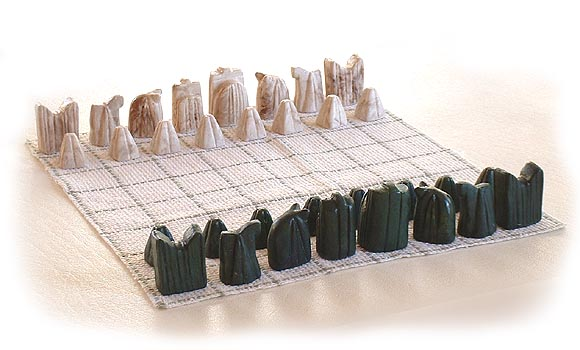

The historians date chess, or at least the games that are believed to be the direct ancestors of chess, as far back as around 600 A.D. Although the exact origins of the game are not known, there are many legends about how it was invented.
Pythagoras, the ancient Greek mathematician and philosopher, was said to have created the game to demonstrate his mathematical ideas, which were too abstract to be explained verbally at the time. Others believe that chess was invented by Moses, when he, as the Jewish sage, was working on developing educational tools. Famous ancient warriors were also credited with inventing chess as a demonstrative tool to analyze various battle positions.
In a short story, known as "The Doubling of the Squares", a king is presented with a new game that is played on a sixty-four-squared board. The king finds the game so fascinating that he orders to reward the inventor of the game with a prize of his own desire. The philosopher decides to uncover one of the not so obvious sides of his creation. "I do not want much" he says, "just give me a grain of wheat for the first square of the board, then two grains for the second one, four for the third one, and so on up to the sixty-fourth square." The king looks at him puzzled, and to a point offended, considering the philosopher's request extremely modest. What he didn't realize at the time was that the philosopher had discovered the power of geometrical progression through the practice of the chess board, and was making a request for more wheat than exists on the whole world: 18,446,744,073,709,551,615 grains.
Mathematics and chess have been inseparable from the very beginning. It is the dependency on the use of calculation and logic only that made chess such an outstanding game from the begining. There is a story of two successive Indian kings, both of whom ask their court wizards to invent a game that will symbolize their understanding of man's fate. The first king, Hashran, orders that the game should symbolize the inevitability of man's destiny, and the wizard invents nard, the predecessor of backgammon. The orders of the next king, Balhait, were quite the contrary - create a game that would emphasize free will and intelligence. And so, chess was invented.
Although we cannot take any one of these stories as the true story about the origins of the game, one thing is apparent from all these stories. Chess was brought in not only as a game, but as a teaching tool as well. In fact it is older than many other modern teaching tools: the chalkboards, books, telescopes. It may seem like only a war game at first, but throughout the fourteen centuries of its existence it has been used as a metaphor to explore many fields of interest of the human mind. Especially those of poets, philosophers, mathematicians, and artists in general, because the abstraction of their ideas has always presented a challenge for them to convey their thoughts to the people, and chess has provided that medium through which they could, at least partially, demonstrate the power of their thinking.
 In reality, the modern version of chess has not been created all at once, but rather was shaped with big and small improvements over centuries. The first version of chess was chatrang which came to life in Persia in the fifth century. It was played with thirty-two pieces on a sixty-four-square (not checkered) board. The names of the pieces were quite different from those of the modern chessmen. Each side had a King, a Minister, two Elephants, two Horses, two Ruhks (which is a Persian word for "chariot"), and eight soldiers. The objective of the game was to capture, trap, or isolate the opponent's King. It is possible that chatrang was imported from India, where a similar game, named chaturanga, existed. Some believe that chaturanga itself was an import from neighboring China, and that the Great Silk Road was the main reason for this migration of the game (as well as many other things and ideas). But there was a reason why this game, and not any other ones of that time, became so popular and started to spread beyond the boundaries of the region. These games (chatrang and chaturanga) contained no dice or any other instrument that would add a factor of luck into the game's outcome. They were games of intellect, and implied that only by use of logic can one obtain victory.
There are many big differences between chess and chatrang though. Leaving the appearance of the board and pieces aside, the moves of the pieces were not the same. In general the pieces were a lot less mobile. There were no pieces that could cross the whole width of the board, or the diagonal of the board, in one move. This by itself would be enough to make the games much slower. So if you think that chess is the most boring game to watch due to its rather slow development, think again. Other differences between modern chess and chatrang include the absence of castling and en passant capture moves, which were a much later addition to the game by the Europeans, making the game more dynamic and strategically sound. It is striking that Horses and Ruhks moved exactly like today's Knights and Rooks.
Since Islam and chess were born at about same time, it is not surprising that chess has deep roots in Islamic nations' cultures. Lacking the ch and ng sounds, Arab Muslims changed the name to shatranj, but that was not the only change they made to the game. In Koran -- the sacred text of Islam -- the prohibition of images is aimed at the elimination of idol worshiping of any sort. So, the Indian and Persian tradition of depicting tiny soldiers, elephants, chariots, and so on, were banned, and the piece were replaced with cylindrical and rectangular stones (shown in the picture above), which could be identified by subtle differences.
The strongest players, who could see up to ten moves ahead in the game, were called aliyat, which meant "highest of ranks". Next in ranking were multaqaribats, who were considered to have a much shorter depth-sight than aliyats. There were only five aliyats in the entire ninth century, one of whom, al-Adli, dominated the game for most of his lifetime, and wrote the first in-depth book on chess analysis called Kitab ash-shatranj (The book of chess).
As the Muslim empire grew, chess spread westward along with the expansion of the empire. Already in the ninth century, the game had reached the eastern shores of the Mediterranean Sea. Throughout the next couple centuries the Muslim armies marched across Northern Africa, conquering it entirely. At this time the land that Muslim armies controlled stretched from China all the way to Spain. It is believed that it was through Spain that the game was introduced in Europe. Although shortly after it crossed the Mediterranean again, this time into Italy through Sicily, which was under the Egyptian rule.
Eventually, during the times of the Crusades, chess, along with science and mathematics, classical literature and philosophy, came to the West from the Muslim culture. The game took root in Europe quickly, spreading all over. By the twelfth century it was so tightly woven into the European culture that it was considered one of the seven essential skills for every medieval knight.
Once again the game was modified, this time to suit the European culture and beliefs. The Elephant was replaced by the Bishop (except in France, where it became le fou, meaning "the jester"), and the Minister was replaced with the Queen. Perhaps the first non-arrogant change, which actually developed the game instead of just making it more European, was the introduction of the dark and light checkered squares. This made it easier for the players, and the observers, to track the movements of the pieces. The craftsmanship of the chessmen rolled back to the actual depiction of the figures, because Christianity does not prohibit imagery.
All these changes would be incomplete if the very name of the game was not Europeanized as well. First it was shifted from the Arabic shatranj to the Latin ludus scacorum ("the game of chessmen"), but later many of the countries within Europe decided to give the game a name of their own. So, in Italy it was renamed to scacchi, in France to eschecs, in Germany to schachspiel, in Holland to schaakspel, in Poland to szachy, in England to chess, etc. Only a few of the eastern European countries (including today's leading countries in world chess Russia and Armenia) decided to keep the name of the game close to its origins, going back to its Persian name, shahmat ("The king is dead").
The Europeans thought that the pace of the game was too slow, and especially the beginning of the game where most of the pieces were blocking each other's way, was too tedious not only for the observers, but even for the players. An alternative version of the game was suggested, in which a single dice was thrown to decide which piece is to be moved. This was unacceptable for those to whom chess was a symbol of free will and logic. It was obvious that the game needed to undergo a major reformation.
Starting with the fifteenth century, Europe saw a number of powerful queens: Mary Tudor, Elizabeth I, Jeanne d'Albret, Catherine of Aragon, and others. So, it is not a coincidence that the impact of the Queen on the chessboard, and in the game in general, changed drastically as well. The Bishop and the pawn movements also were changed along with the Queen's improvement. Now pawns could move either one or two square on their first move, and the Bishops could move as far as they wanted if their path was clear. The Queen's new moving abilities were now the Rook's and Bishop's abilities combined.
This new, much faster, and a more challenging chess reflected the times in which it was formed. Europe was in turmoil of cultural transformation, rise in female power, marching toward a renaissance. And so was chess. Although the renaissance of its structural part was already over, most of it was yet to come because with those few improvements chess had become such a dynamic game that the advantage could be shirfed back and forth between the players after each move. Being able to move the Queen and the Bishops so swiftly created chances for unexpected, sharp attacks, and the most experienced of the players had to revise their entire knowledge and theories of the game. Most of the complexity was caused not only by the drastically increased number of possible moves that players had, but also by as many possible replies by their opponent on each of those moves.
A simple calculation of just the first few possible moves shows the nearly infinite opportunities that the game offers. There are only twenty possible moves for white as its first move: each pawn has an option of two moves, and each knight has two possible choices as well (8 X 2 + 2 X 2 = 20). Black, on its turn, can reply with twenty moves (similarly) to each of white's first moves. Therefore, already after the first move (moves in a chess are counted in pairs) we can have four hundred possible variation on the board. For the second move white can have up to twenty seven possible legal moves. We say up to, because depending what the first move was the number of possible second moves can change. And for the black's second move it's even more complicated to predict the exact number of possible moves, but taking the average numbers, and applying them in proper calculations we get 71,852 possible variations after the second complete move. If you think that's a big number, soon you will change your mind. The number of possible variations skyrockets by each of the following moves. After the third complete move the position on the board will be one of the approximately nine million possible variations, and one of the 315 billion possible variations after the fourth move. The game has barely started, and we are already dealing with hundreds of millions of possible variations. It is estimated that the number of all possible games is about 10120: a benchmark that is beyond not only human ability to play them all, but even of that of the most sophisticated and powerful super-computers of today. That is why, although chess is theoretically lost for blacks if played perfectly, we don't have enough calculating power to find that perfect algorithm yet.
...